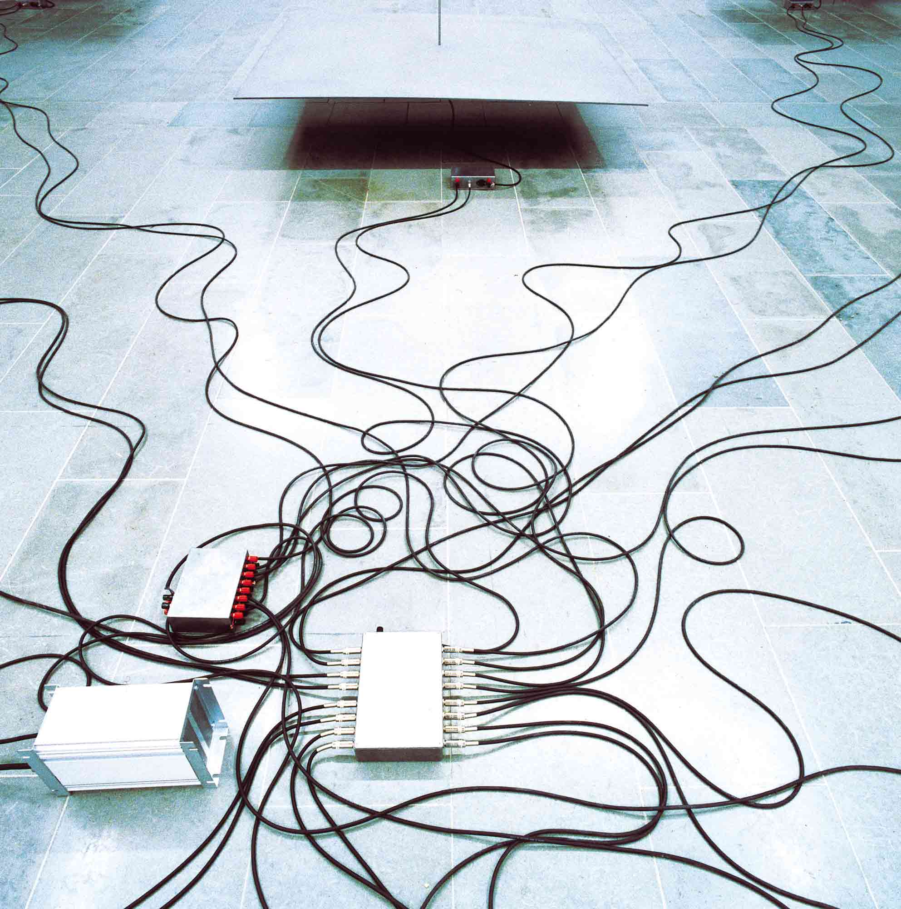

Tampere Art Museum
1997
Electromagnet installation
Steel sheets, stainless-steel rods, electromagnets, control unit, infrared sensors, power supply
Nine sand-blasted steel sheets hang from the ceiling of the exhibition space. Electromagnets, stuck to the
under surface of each steel sheet, are connected to an infrared sensor via a control unit. When a sensor
detects a human presence, the control box begins rapidly switching the electric current to the magnet on and
off. When the current is turned off, the magnet begins to fall, and is then pulled back when the current is
switched on again. This continues endlessly and makes the sheet resonate. The frequency becomes constantly
higher when the sensor is activated, and slowly drops out of the audible range when it is de-activated. The
public's movements cause the nine sheets—each one in a different phase—to create a constantly
altering
soundscape in the exhibition space.
Dimensions variable

Radiation Sensitive Sound Installation
Ultrasound Installation